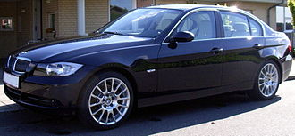
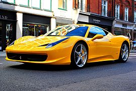
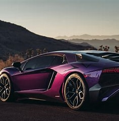
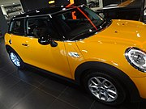

BMW (singkatan untuk Bayerische Motoren Werke, atau dalam Bahasa Inggris, Bavarian Motor Works), adalah sebuah perusahaan otomotif Jerman yang memproduksi mobil dan sepeda motor. BMW didirikan pada tahun 1916 oleh Franz Josef Popp. BMW AG adalah perusahaan induk dari merk mobil MINI dan Rolls-Royce, dan, dulunya Rover. BMW dikenal sebagai salah satu perusahaan mobil mewah dengan performa tinggi, dan juga salah satu perusahaan mobil pertama yang menggunakan teknologi ABS.
Ferrari adalah sebuah produsen mobil super dan mobil balap asal Italia berperforma tinggi yang berbasis di Maranello, Italia. Ferrari didirikan oleh Enzo Ferrari pada tahun 1929, sebagai "Scuderia Ferrari", perusahaan yang mensponsori para pembalap dan membuat mobil balap sebelum pindah ke produksi kendaraan komersial yang dikenali sebagai Ferrari pada tahun 1947. Sepanjang sejarahnya, perusahaan ini telah berpartisipasi paling lama dalam dunia balap, terutama di Formula Satu, di mana telah sukses besar. Perusahaan ini kemudian juga mengembangkan produksi mobil independen pada 1946, dan kemudian menjadi Ferrari S.p.A., dan sekarang dikuasai oleh grup Fiat. Perusahaan ini bermarkas di Maranello, dekat Modena, Italia. Ferrari juga ikut serta dalam kompetisi Formula Satu. Salah satu pembalapnya yang terkenal adalah juara dunia tujuh kali asal Jerman, Michael Schumacher.
Automobili-Lamborghini S.p.A., sering disebut Lamborghini adalah sebuah perusahaan pembuat mobil di Italia. Perusahaan ini didirikan oleh Ferruccio Lamborghini pada tahun 1963, dengan tujuan untuk menghasilkan mobil grand wisata yang dapat bersaing dengan mobil yang telah ada dipasaran terlebih dahulu seperti Ferrari. Model pertama perusahaan Lamborghini dirilis pada pertengahan tahun 1960, kemudian dicatat untuk perbaikan, kekuasaan, dan kenyamanan. Lamborghini mendapat banyak pujian pada tahun 1966. Setelah beberapa dekade, masa sulit menimpa perusahaan di pertengahan tahun 1970-an, seperti penjualan anjlok karena krisis moneter dunia 1973 dan krisis minyak. Setelah melewati masa kebangkrutan dan empat kali perubahan kepemilikan, Lamborghini menjadi anak perusahaan dari Chrysler pada tahun 1987. Kurangnya keberhasilan Lamborghini terus berlanjut sampai tahun 1990-an, Pada tahun 1994, dua pengusaha asal indonesia Setiawan Djody dan Tommy Soeharto mengakui sisi kepemilikan Lamborghini dari tangan chrysler, sayangnya, kepemilikan ini tidak berlangsung lama hanya sampai 1998, sampai akhirnya perusahaan itu dijual pada tahun 1998 kepada Audi, anak perusahaan dari Grup Volkswagen, sebuah perusahaan otomotif Jerman. Kepemilikan Audi menandai awal dari sebuah periode stabilitas dan peningkatan produktivitas untuk Lamborghini, dengan penjualan meningkat hampir sepuluh kali lipat selama tahun 2000-an, memuncak pada rekor penjualan pada tahun 2007 dan 2008. Krisis moneter dunia pada akhir tahun 2000-an berdampak negatif terhadap pembuat mobil mewah di seluruh dunia, dan melihat penjualan Lamborghini turun kembali ke tingkat pra-2006. Produk pertama Lamborghini adalah traktor, dibuat dari bahan-bahan sisa perang. Lamborghini sukses dengan usaha membuat traktornya, kemudian Ferruccio Lamborghini membeli sebuah supercar Ferrari 250 GT. Setelah membeli Ferrari, Lamborghini mendapat masalah pada mobilnya, yaitu pada koplingnya dan suara yang berisik. Kemudian Ferruccio Lamborghini datang menemui Enzo Ferrari, pendiri Ferrari. Bukan mendapat jawaban, Ferruccio Lamborghini mendapat ucapan yang membuatnya merasa tersinggung dan sakit hati, yaitu: "Masalahnya bukan dari mobilnya tapi pengendaranya," kata Enzo Ferrari. Dan parahnya lagi, Enzo melemparkan kata-kata pedas, yaitu: "Urusi traktormu saja," kata Enzo Ferrari yang membuat Ferruccio merasa dihina. Kemudian Ferruccio Lamborghini bersumpah untuk membuat mobil yang dapat mengalahkan pesona Ferrari. Ferruccio Lamborghini memanfaatkan kota kecil Sant'Agata Bolognese untuk membuat supercar pertamanya. Lamborghini mengajak 3 karyawan mantan pekerja Ferrari, yaitu: Gyoto Bizarini, Franco Scaclion, dan Gyan Paulodalara diajak Ferruccio untuk bergabung. Tugas mereka adalah untuk membuat GT mewah. Akhirnya Lamborghini membuat supercar pertamanya yaitu 350 GT pada tahun 1963. Sekarang Lamborghini telah sukses di pasar otomotif.
Mini Cooper dan Cooper "S" merupakan model sporti dari mobil ini yang sukses sebagai mobil reli, berhasil memenangkan Reli Monte Carlo empat kali dari tahun 1964 sampai 1967, meskipun kemenangannya pada tahun 1966 akhirnya didiskualifikasi. Pada awalnya Mini dijual oleh Austin dan Morris, sebagai Austin Seven dan Morris Mini Minor.
